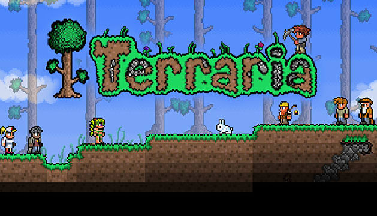

The massively multiplayer online game world of warcraft has a total of 7 current up to date, with one more coming in the future. The game is made by Blizzard entertainment, and is updated weekly. There is currently 12 classes, with 10 of them having three subclasses(available at level 10), one of them having 4 subclasses(also available at level 10), and one having only two subclasses
(available at level 100).

Terraria has been around since 16 of may, 2011. There are at least 19 biomes currently on the pc, and each biome has a specific set of enemy creatures. The 2D platformer has incredible soundtracks for each biome as well, adding a more in-depth atmosphere to the game as a whole. The biomes are also home to unique weapons, that are always more or less related to where it came from. There
are also blocks that you can use from said biomes to craft homes, that look specific to the biomes the blocks came from.
Destiny 2 is a more recent addition to the gaming scene, as it was only fully released on November 24, 2017. And, as most new games are, it has brought with it a marvelous soundtrack that fills the player with a sense of adventure and wonder, and a great storyline leading the player to a sense of glory and acheivement when it is completed. With this game, there are 3 overall races, and an
enourmous customizeation screen where you can customize hair, lip colour, hair colour, and another option more related to the race you chose.